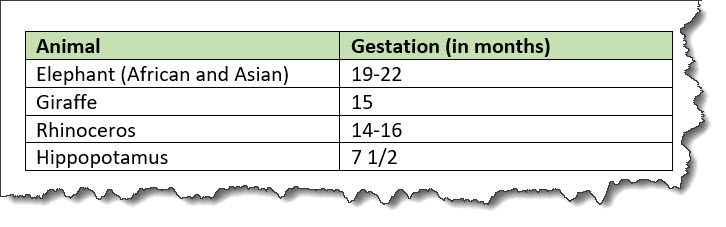

<table>
A table based on the OASIS Exchange Table Model organizes arbitrarily complex relationships of tabular information. This standard table markup provides a wide variety of controls over the display properties of the data and even the table structure itself.
Usage information
The <table> element is based on
the OASIS Exchange Table Model. However, it is
augmented with DITA attributes that enable accessibility, content reference,
specialization, and more.
An optional <title> inside the
<table> element provides a
caption to describe the table. In addition, the optional
<desc> element enables a table
description.
See simpletable for a simplified table model that is closely aligned with the HTML5 table model, and which can be easily specialized.
For <table>, in place of the
@expanse attribute that is used by other
DITA elements, the @pgwide attribute is
used in order to conform to the OASIS Exchange Table Model.
Rendering expectations
If a <table> element contains a
<desc> element, the content of
the <desc> element is rendered as
part of the content flow.
Attributes
The following attributes are available on this element:
universal attributes,
@colsep,
@frame,
@rowheader,
@rowsep,
@scale, and the attributes defined below.
-
@orient -
Specifies the orientation of the table in page-based
output formats. This attribute is primarily
useful for print-oriented display. The following values are valid:
- port
- Indicates portrait page orientation. The page is oriented with its long side vertical and its short side horizontal.
- land
- Indicates landscape page orientation. The page is oriented with its long side horizontal and its short side vertical.
- -dita-use-conref-target
- See Using the -dita-use-conref-target value for more information.
-
@pgwide -
Specifies the horizontal placement of the element for print-oriented rendering. The
following values are valid:
- 0
- Aligns the element with the left margin of the current text line and takes indentation into account
- 1
- Places the element on the left page margin
Example
The following code sample shows a table that is used to provide reference information about animals and gestation:
<table>
<tgroup cols="2">
<colspec colwidth="121*"/>
<colspec colwidth="76*"/>
<thead>
<row>
<entry valign="top">Animal</entry>
<entry valign="top">Gestation (in months)</entry>
</row>
</thead>
<tbody>
<row>
<entry>Elephant (African and Asian)</entry>
<entry>19-22</entry>
</row>
<row>
<entry>Giraffe</entry>
<entry>15</entry>
</row>
<row>
<entry>Rhinoceros</entry>
<entry>14-16</entry>
</row>
<row>
<entry>Hippopotamus</entry>
<entry>7 1/2</entry>
</row>
</tbody>
</tgroup>
</table>The formatted output might be rendered in the following way:

In this example, the use of the
<thead> element for the header
enables processors or screen readers to identify a header relationship between any cell in
the table body and the matching header cell above that column.